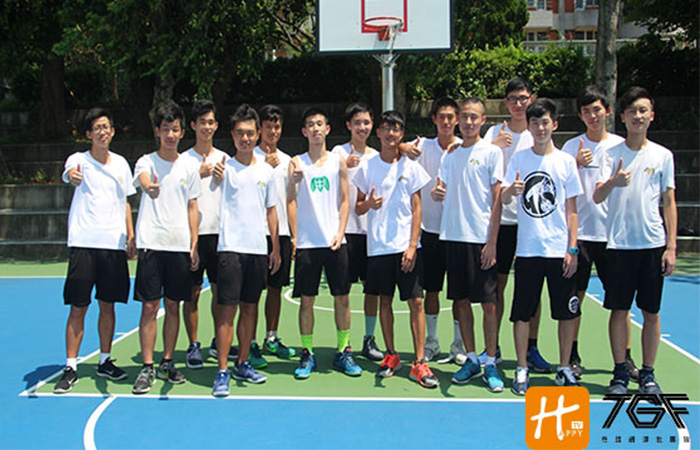

貼文時間：2017/07/10

新竹高中在新竹當地可說是不容小歔的強勁隊伍之一，高學歷加上會打球，在各個領域上都極為吃香。相信大家不陌生SBL台灣銀行的成力煥，歷經了SBL三年多磨練的他，終於獲得青睞，並拿下東亞錦標賽中華男籃國手這個殊榮，但極少人知道他畢業於新竹第一學府新竹高中，此外竹中也出生許多活躍於大專甲一級的選手...
新竹，大家第一印象大多想到的是風很大，球員們說：「風不只很大，有時候室外練習都會被風推著跑，有種有人當後盾的感覺，所以不怕跌倒，反而更勇敢的向前衝刺。」
以速度聞名的竹中，外線能力可說是彈無虛發，104學年度竹中林宇軒切入絕殺、逆轉建中挺進敗部最後一戰，可惜下半場傷兵過多，無法正常發揮，導致敗北來自花蓮的海星高中，但此場比賽可帶給學弟們不少衝擊，更讓學弟們明白自己該挺身而出，為自己奮鬥。
身為第一學府的新竹高中課業繁重，球員們總緊抓課餘午休時間集合於球場，練習並培養團隊默契，球隊靈魂人物吳承浩表示：「每個禮拜一三五中午一個小時的訓練量遠不及體育班一天的訓練量，但可能我們比較聰明點，所以學起來比較快上手！」從對話中不難發現竹中優異的靈活腦袋，以及霸氣的思維。
雖然今學年度再次止步在北區複賽，但每個球員的心態卻也因為賽事的進行，學到更多實戰經驗以及磨合出更佳的團隊默契。而范盛傑教練趁著課餘時間協助並糾正球員們動作與觀念，加上球員們自我加強，使竹中籃球隊在竹苗地區佔有一席之地，並在課業與球技的均衡發展獲得肯定。
以學術聞名的竹中球員們，相信能闖出自己的一片天，顛覆大家竹中只會讀書的這個刻板印象，究竟明年乙組是否會颳起竹中旋風呢？